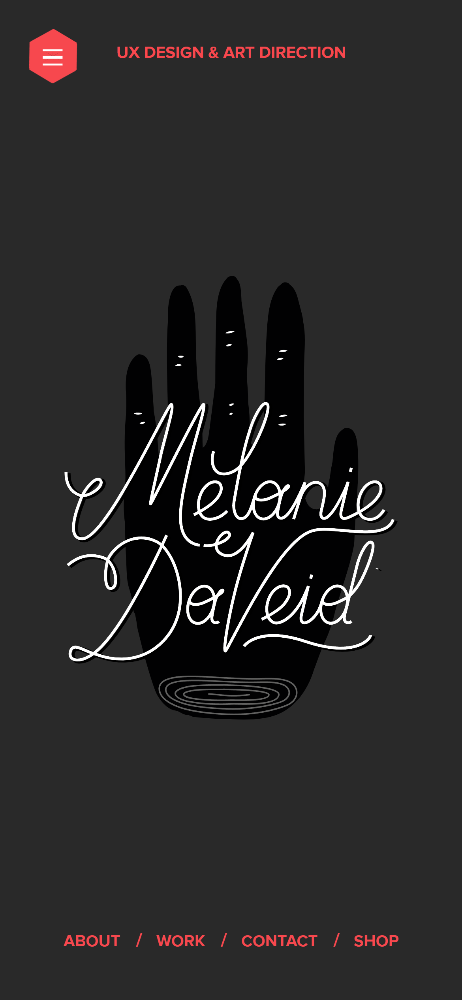
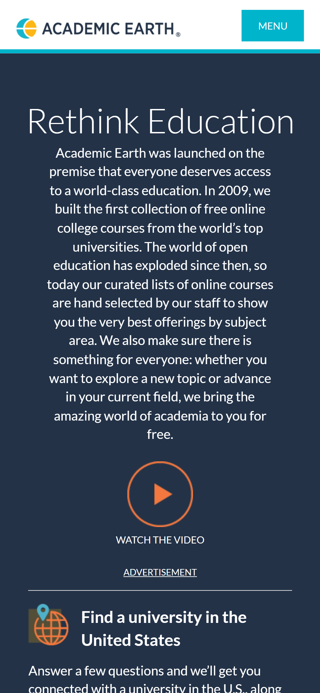
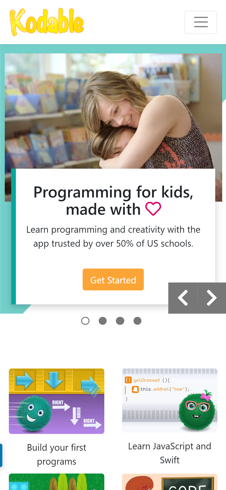

Contrast
Melanie Daveid Design
https://melaniedaveid.com/ Here on Melanie Daveid's website, I can see how he managed to make use of a grey background than black to create a shadow that we can view as a hand due to the contrast. The presence of small white dots is noticed which is also in contrast to the black hand. Lastly, his name is written in a modern stylish fashion in white which we all know is a perfect contrast to black colour.
Visual Hierarchy
Academic Earth
https://academicearth.org/ Academic earth makes use of Visual Hierarchy here on their front page. As I loaded the page, my attention was drawn to the phrase "Rethink Education" because of its size which gave it a level of importance. Immediately I tried looking away, I was instantly drawn to the play button which was looking attractive to click on, it felt important after I left the big size above.
Alignment
Kodable
https://kodable.com/ Kodable is a programming website for kids that has many great web design practices and one of which is alignment. It's obvious how the vertical alignment of the website adds a sense of arrangement and balance to the page. The horizontal alignment used to differentiate the sections also look great and has helped a great deal in their presentation for children. Simple alignment the layout good.